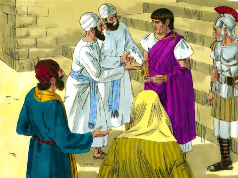
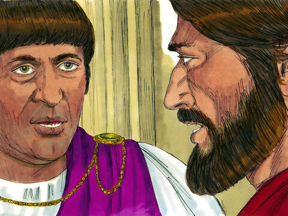
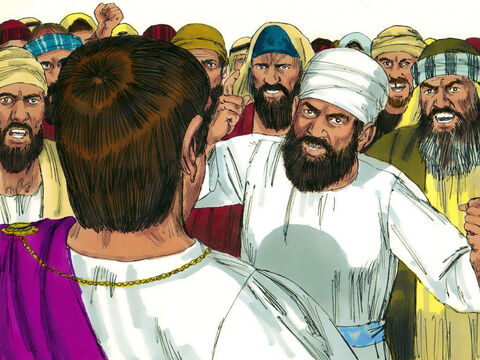
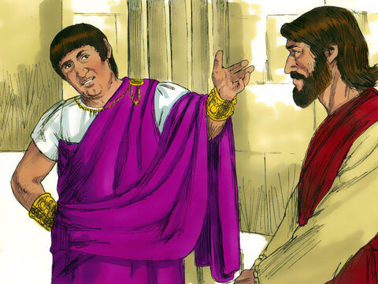
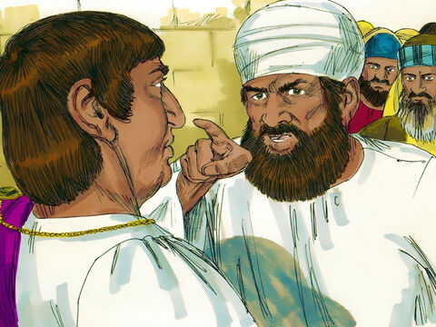
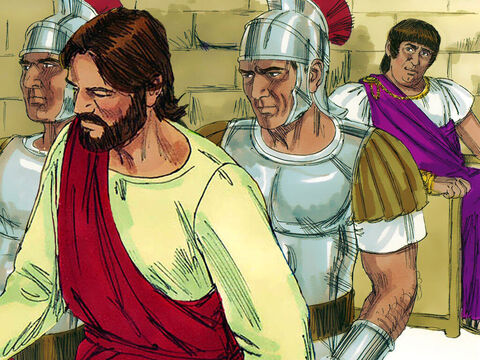

Lord Jesus Before Pilate
And Jesus stood before the governor: and the governor asked him, saying, Art thou the King of the Jews? And Jesus said unto him, Thou sayest.
And when he was accused of the chief priests and elders, he answered nothing.
Then said Pilate unto him, Hearest thou not how many things they witness against thee?
And he answered him to never a word; insomuch that the governor marvelled greatly.
Matthew 27:11-14
- 
- 
- 
- 
- 
- 